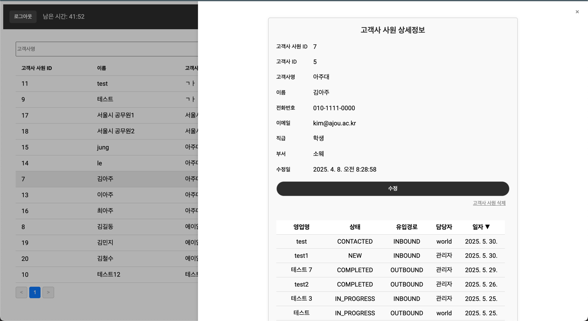

Project portfolio · 2025
소규모 팀을 위한 핵심 영업 관리
고객사, 영업 이력, 미팅 일정을 한곳에서 관리하는 경량형 웹 서비스입니다.
2025.02–2025.06 · Spring Boot 3 · Java 21 · MySQL

01 · Problem & product
개인이나 소규모 기업은 복잡한 CRM의 모든 기능이 필요하지 않을 수 있습니다. 고객과 미팅을 관리하는 기본 기능을 간결한 화면에 담았습니다.
영업 사원, 고객사와 담당자, 영업 이력, 컨택 이력을 조회·생성할 수 있습니다. 목록의 행을 선택하면 연결된 상세 정보를 슬라이드 패널로 보여줍니다.
고객사와 담당자 관리
진행 상태와 접촉 기록
미팅·컨택 예정일 저장
설정 시점의 이메일 안내
02 · My work
영업에 필요한 기능을 선정하고 화면 흐름을 설계했습니다. 프론트엔드와 백엔드를 개발해 웹 서비스로 배포했습니다.
목록에서 주요 정보를 빠르게 찾고, 선택한 행의 관련 정보를 오른쪽 패널에서 확인하도록 구성했습니다. 고객사·사원·영업 이력의 관계를 한 화면에서 살펴볼 수 있습니다.
03 · Technical decision
여러 영업 사원이 같은 데이터를 다룰 때 모든 사용자에게 동일한 접근 범위를 주면 권한 관리와 데이터 보호가 어려워집니다.
계정에 Role 유형을 부여해 열람 가능한 정보를 구분했습니다. 최하위 Role은 권한을 변경할 수 없도록 제한했습니다.
화면과 서버에서 사용자 역할에 맞는 작업만 허용해, 여러 계정이 같은 CRM을 사용할 때의 정보 접근 범위를 명확히 했습니다.
04 · Reflection
CRM처럼 여러 사람이 사용하는 도구는 기능 구현과 함께 접근 권한을 설계해야 합니다. 핵심 영업 흐름을 먼저 정하고 화면을 단순하게 구성하는 경험도 얻었습니다.
개인·기업 사용자에게 실제로 배포해 사용 의견을 모으는 단계는 진행하지 못했습니다. 사용성 검증과 영업 보고서 요약 기능은 향후 개선 아이디어입니다.
실사용자 검증과 AI 요약 기능은 원본 자료의 향후 과제이며 현재 구현 기능으로 표현하지 않았습니다.